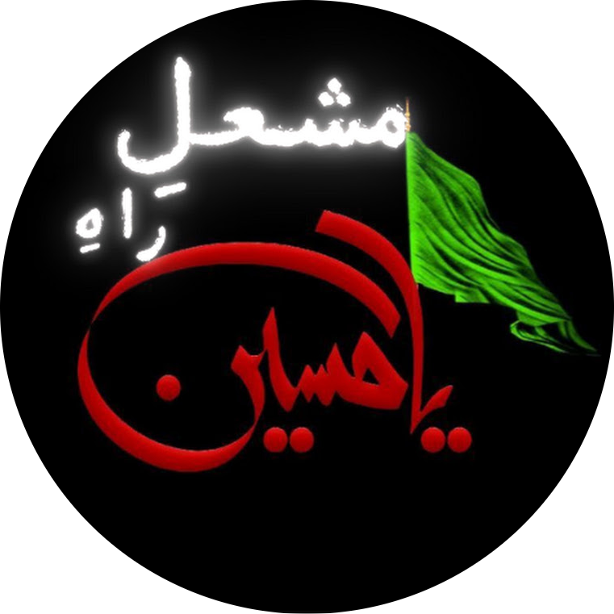

Mash’al-e-Hussain is a platform for Noha, Majlis, and Matam Dari. We aim to spread the message of Imam Hussain (AS) with authentic and original content.
Daily Nohay & Majlis Uploads
Live Majlis & Jaloos Coverage
Matamdari Videos
Subscribe to our Channel
@Mashal-e-Hussain
Ya Hussain (AS)